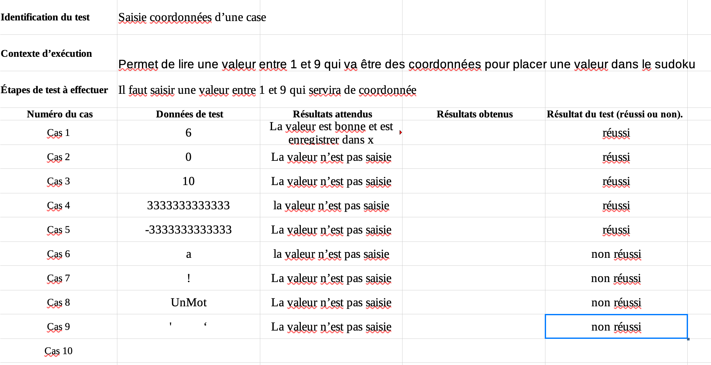

Langage C
Projet N°1: Le Jeu Du Sudoku
Au cours de notre première année à l'IUT le premier projet avec de la programmation que j'ai eu à réaliser était un projet où je devais programmer un jeu du Sudoku. Ce projet devait être réaliser seul. Pour cela je devais passer par plusieurs étapes.
Etape 1
Dans un premier temps j'ai dû réaliser le sudoku au Pseudo-code. Ce Pseudo-code allait nous permettre de comprendre celui ci fonctionne et comment nous allion le réaliser.
Etape 2
La deuxième étape était la réalisation d'un cahier de test qui allait être à compléter à la fin du projet. Je devais donc m'occuper de prévoir tout ce que l'application devait faire ou ne pas faire.
Cahier de test:
Etape 3
L'étape 3 était le début de la réalisation du projet. Je devais donc réaliser le jeu de sudoku en langage C. Je devais suivre le Pseudo-code qui avait été réaliser en début de projet afin d'être sûr que celui ci corresponde bien avec les attendus du client car oui ce projet avait aussi des attendues.
Explication sur comment j'ai réalisée le sudoku
Pour ce sudoku j'ai réalisé une grille de taille 9*9, Il fallait donc créer plusieurs procédures et fonction car il fallait vérifier en colonne, en ligne et dans la case de 3*3 si le chiffre n'étais pas présent deux fois. Il fallait prévoir des erreurs qui pouvait permmettre à l'utilisateur de comrpendre où es qu'il c'était tromper. Il fallait aussi gérer l'affichage qui devait s'actualiser et aussi la saisie des chiffres qui devait être entre 1 et 9 (inclus).
C'était la parti la plus longue et la plus dur du projet. Mais ensuite il fallait tester son programme pour voir si ce dernier répondait correctement au cahier de test qui avait aussi été fait au début du projet. Ce qui nous mène à l'étapes 4 !
Etape 4
L'étape 4 est, comme dit avant, le moment de test notre programme pour voir si il répond comme je l'attendais dans le cahier de test. J'ai donc du préparer une rendu pour prouver que ce dernier répondait comme il je l'avais attendu.
Lien du GitHub pour ce projet :
SudokuProjet N°2: Solver Du Jeu Du Sudoku
Ce projet fait suite au projet du jeu du Sudoku. Il s'agit de la réalisation d'un deuxième programme en c dont le but est de résoudre le plus vite possible le programme du jeu de Sudoku qu'on avait réaliser juste avant. Ce projet quand à lui se faisait par groupe de deux.
Etape 1
Comme dans le projet du jeu du Sudoku, la première étape est la réalisation d'un pseudo-code. Enfin dans ce projet nous devions faire 2 pseudo code en réalité. Chacun des pseudos codes abordaient une méthode différent pour résoudre le Sudoku. Pour résoudre le sudoku automatiquement et le plus vite possible il faut utiliser une méthode de backtraking. Le but étant d'essayer le plus de possibilité en peu de temps. On peu optimiser cette méthode en éliminant les chiffres évidants qui n'avait d'une possiblité. Si un chemin n'était pas bon on revenait en arrière pour voir si il un autre chemin pouvait fonctionner et ainsi de suite. Pour en revenir au deux façon de faire il y a une méthode où l'on fait le backtraking avec des integer et une autre méthode où l'on fait le backtraking avec des string. Logiquement le plus optimiser serait le backtraking avec les integer mais cela dépend de comment le Sudoku est réalisé.
Etape 2
La deuxième étape étaient la réalisation du Solveur, Ici nous n'avions pas besoin de cahier de test car la seul chose que le Sudoku devait faire c'était de résoudre. Il n'y avait donc aucune saise sauf pour la saisie de la grille à chaque lancement du programme. Il fallait juste ensuite enregistrer les temps réaliser afin de déterminer si notre programme pouvait résoudre des grilles simples ou durs en peu de temps. Les grilles utilisés ne sont pas les mêmes que utilisés juste avant car il s'agit de maxi grille mais le programme fonctionne aussi avec des petites grilles.